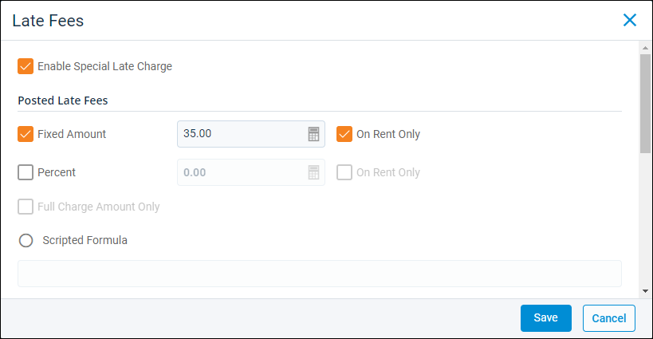
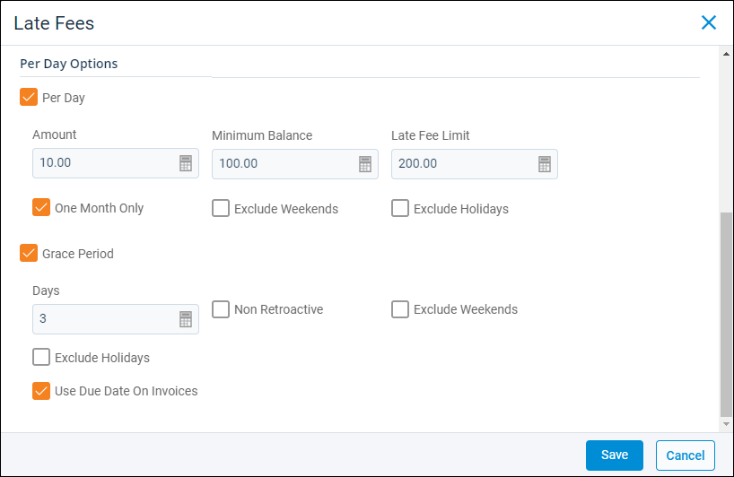

Source: https://rmxhelp.rentmanager.com/Topics/Express/CSH/Property-Late-Fees.htm
Property Late Fees (Pop-Up)
Property late fee settings are defined to create additional charges for tenants with delinquent balances and determine how those fees are accrued. Late fees can be set up using a flat rate, a variable rate calculated using a percentage of the open balance, and/or a rate that increases each day the tenant remains delinquent. You can also add grace periods before fees begin to accrue, enter a maximum dollar amount for late charges, and establish the minimum account balance required to be charged fees.
More Information
The late fee settings are automatically applied to all active tenants of the property, but these settings can be overridden for individual tenants if needed. For more information, refer to Tenant Late Fees (Pop-Up).
Related Privileges
| Group | Privilege | Column |
|---|---|---|
| Properties/Units | Properties | View, Edit |
| Receivables | Change late fees | Enabled |
For more information, refer to Control User Access.
To establish property late fees, go to  arrow_forward Rental Info arrow_forward General arrow_forward Properties and select a property from the list. Then, on the action bar on the right, click
arrow_forward Rental Info arrow_forward General arrow_forward Properties and select a property from the list. Then, on the action bar on the right, click  arrow_forward Late Fees. To make adjustments to the setup, check Enable Special Late Charge.
arrow_forward Late Fees. To make adjustments to the setup, check Enable Special Late Charge.
Posted Late Fees

The Posted Late Fees section allows you to establish settings for creating one-time late charges for delinquent tenants. These settings are used when manually posting late fees in a batch from the Post Late Fees page and when utilizing a task automation schedule for late fees. After posting, fees immediately display on the tenant's View Transactions pop-up along with their other charges and payments.
The following fields are available in this section:
| Field | Description |
|---|---|
|
Fixed Amount |
Apply a flat fee to any late payment. In the adjacent field, enter the amount of the single flat fee to apply to the tenant's delinquent charges. Check On Rent Only to apply the flat fee to delinquent charges with a Rent Charge Type established on the property's details page. |
|
Percent |
Apply a late fee calculated using percentage of the tenant's total delinquent charges. In the adjacent field, enter the percentage of the remaining balance on an outstanding charge to be used as a late fee. Check On Rent Only to apply a percentage-based late fee only to delinquent charges with a Rent Charge Type established on the property's details page. Or, check Full Charge Amount Only to calculate the percentage using the full charge amount and not the remaining balance. |
|
Scripted Formula |
Additionally, apply a late fee amount based on the value of the script or calculation entered. If you enter an equation as part of your script, the field applies the value of the calculation. For more information, refer to Scripting. |
Per Day Options

The Per Day Options section allows you to establish settings for charging late fees based on the number of days that delinquent charges remain unpaid. As the amount is not calculated until the open balance is paid, the fee does not display on the tenant's View Transactions pop-up until a payment is made.
To charge per day late fees, check Per Day. The following fields are available:
| Field | Description | |||||||
|---|---|---|---|---|---|---|---|---|
|
Amount |
The dollar amount to charge the tenant each day that they are delinquent. |
|||||||
|
Minimum Balance |
The lowest delinquent account balance at which a tenant accrues late fees. For example, if 100 is entered in this field, tenants with less than $100 in unpaid charges are not charged per day late fees. |
|||||||
|
Late Fee Limit |
The maximum dollar amount that a tenant can be charged for daily late fees. |
|||||||
|
One Month Only |
Accrue daily late fees for a maximum of one month. |
|||||||
|
Exclude Weekends |
Does not accrue daily late fees on weekends. |
|||||||
|
Exclude Holidays |
Does not accrue daily late fees on the holidays defined in the General Options section of system preferences. For more information, refer to Default Holidays (System Preferences). More Information If holidays have been defined on the property Late Fees tab in Rent Manager 12, the system preferences are overridden. |
|||||||
|
Grace Period |
Prevents late fee charges from accruing until a set number of days pass. Each field is described below. |
|||||||
|
||||||||
|
Use Due Date On Invoices |
When enabled, daily late fees are calculated from the Due Date field entered on each invoice. If you manually edit that invoice's due date before payment, the late fees recalculate to match. When left unchecked, daily late fees are calculated from the Due Day on the tenant's General tile instead. Related Preferences To create invoices when posting recurring charges or late fees, you must have the Create invoices when posting recurring charges option enabled in system preferences. For more information, refer to Invoices/Estimates (System Preferences). |